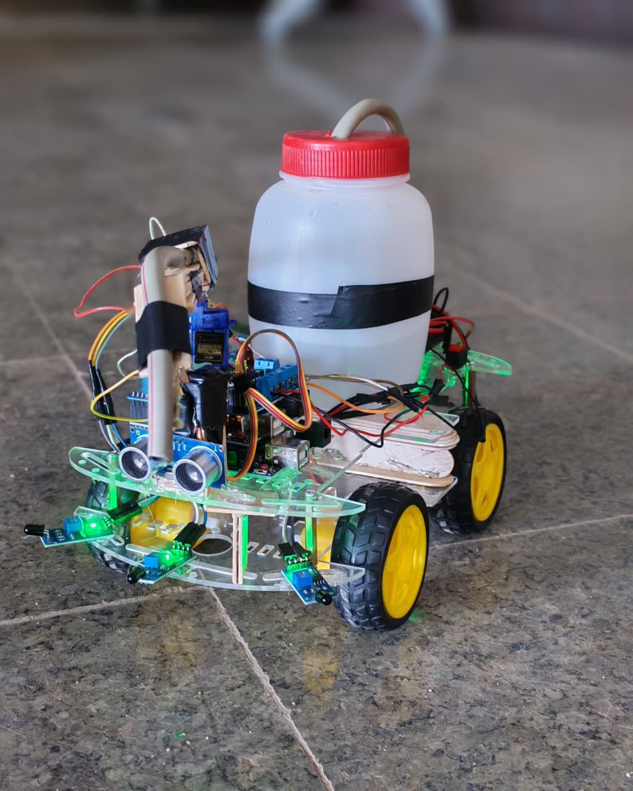
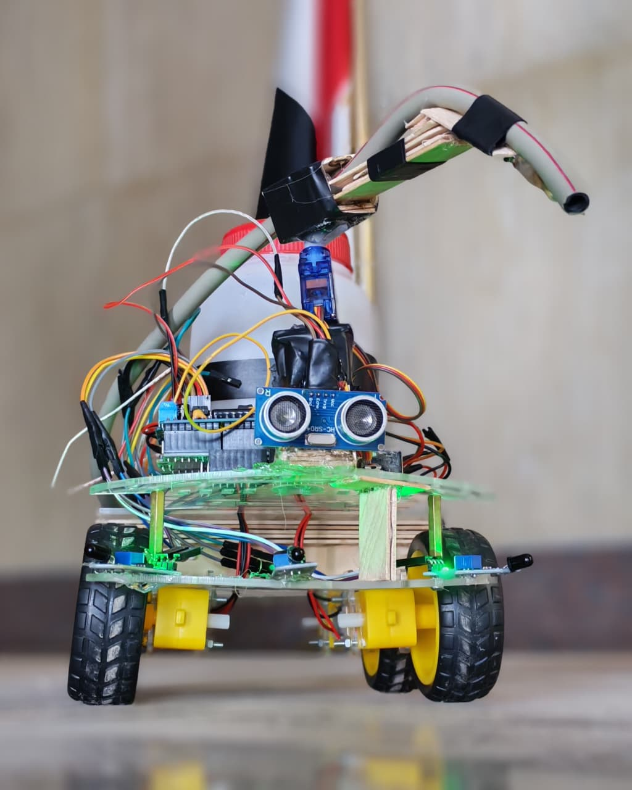
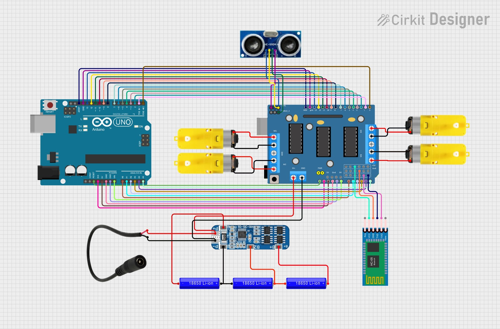

نبذة عني
My name is Abdulrahman , I am 19 years old, and I am a student at the Faculty of Computers at Sadat National University , majoring in Front End.
مهاراتي
- drawing
- playing football
- Web devoloper
- desginer



My name is Abdulrahman , I am 19 years old, and I am a student at the Faculty of Computers at Sadat National University , majoring in Front End.


